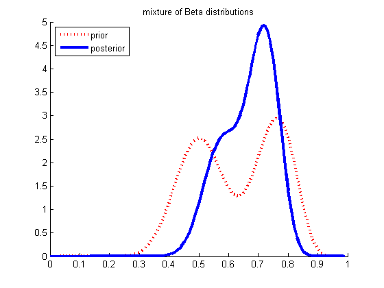

Contents
function mixBetaDemo()
Mixture of Beta distributions
N = [20 10];
alphaPrior = [20 20 ; 30 10];
M = 2;
mixprior = [0.5 0.5];
for z=1:M
logmarglik(z) = betaln(alphaPrior(z,1) + N(1), alphaPrior(z,2) + N(2)) - ...
betaln(alphaPrior(z,1), alphaPrior(z,2));
end
mixpost = exp(normalizeLogspace(logmarglik + log(mixprior)));
for z=1:M
alphaPost(z,:) = alphaPrior(z,:) + N;
end
grid = 0.0001:0.01:0.9999;
post = evalpdf(grid, mixpost, alphaPost);
prior = evalpdf(grid, mixprior, alphaPrior);
figure; hold on
plot(grid, prior, 'r:', 'linewidth', 3)
plot(grid, post, 'b-', 'linewidth', 3)
legend({'prior', 'posterior'}, 'Location', 'NorthWest')
title('mixture of Beta distributions')
printPmtkFigure('mixBetaDemo')
pbiased = 0;
for k=1:M
model.a = alphaPost(k, 1);
model.b = alphaPost(k, 2);
pbiased = pbiased + mixpost(k)*(1-betainc(0.5, alphaPost(k, 1), alphaPost(k, 2)));
end

Compute pbiased using just mixture component 1
pbiasedSimple = 1-betainc(0.5, alphaPost(1,1), alphaPost(1,2))
pbiasedSimple =
0.8858
end
function p = evalpdf(thetas, postZ, alphaPost)
p = zeros(size(thetas));
M = numel(postZ);
for k=1:M
model.a = alphaPost(k, 1);
model.b = alphaPost(k, 2);
p = p + postZ(k)*exp(betaLogprob(model, thetas));
end
end